Newton Conjugate Gradient Method
共轭梯度法
- 背景
- 本质上是一种求\(Ax=b\)的方法，它厉害在不需要知道\(A\)的具体值，只需要多调用几次\(Ay\)点积接口就可以把\(x\)求出来
- 计算复杂度
- 函数的梯度的计算复杂度一般是\(O\left ( n \right )\)
- 求函数的梯度的复杂度和求函数本身的复杂度是常数倍的关系
- Hessian的计算复杂度是\(O\left ( n^{2} \right )\)
- Hessian的逆的计算复杂度是\(O\left ( n^{3} \right )\)
- Hessian-vec的复杂度是\(O\left ( n \right )\)，证明过程如下：
- 假设\(\xi \)是一个已知的常向量
- 根据泰勒展开有：\(\triangledown f(x+\alpha\xi)=\triangledown f(x)+\alpha\triangledown^{2}f(x)\xi +o(\left|\alpha\right|)\)
- 简单变形：\(\triangledown^{2}f(x)\xi\approx\frac{\triangledown f(x+\alpha\xi)-\triangledown f(x)}{\alpha}\)
- 可以发现，求Hessian-vec的近似解只需要求原函数的两次导即可
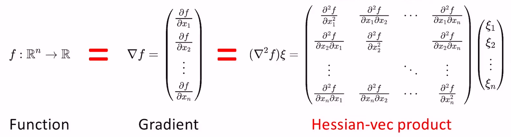
- Linear Conjugate Gradient Method
- 针对问题\(Ax=b\)，我们可以将其转化成一个优化问题\(argmin_{x}f(x)=\frac{1}{2}x^{T}Ax-b^{T}x\)，因为该优化问题的导数是\(Ax-b\)，最优解即令其导数为零的点。
- 梯度下降法和牛顿法求该问题
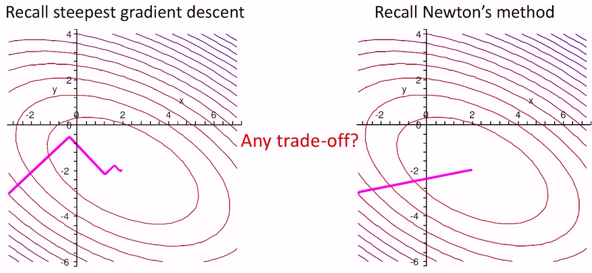
- 梯度法没法得到精确解，步长总会引入误差；牛顿法计算量太大，而且牛顿法需要求\(A^{-1}\)，而我们本来就是要求这个，鸡生蛋蛋生鸡了；我们需要一种折中的方法——LCG方法
- 假设\(x\in R^{n}\)，LCG法就是找\(n\)个互相共轭（如果\(A\)是单位阵，共轭就是垂直）的向量，每次沿着一个向量（的方向）走到最低点，最终一定能走到全局最低点
- 下图是\(A\)为单位阵的情况
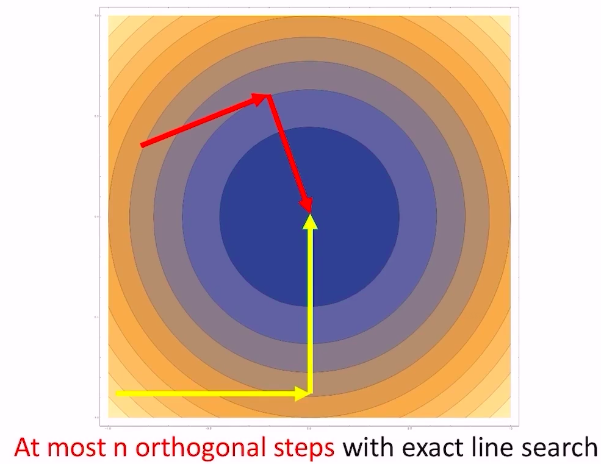
- general的情况如下
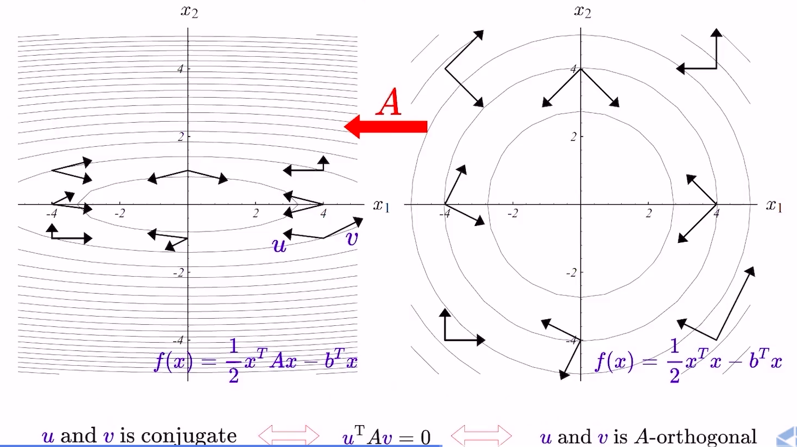
- 下图是\(A\)为单位阵的情况
- LCG算法流程
- 求\(n\)个互相共轭的向量
- 初始化\(n\)个线性不相关的向量\(v^{1},…,v^{n}\)
- 计算互相共轭的向量：
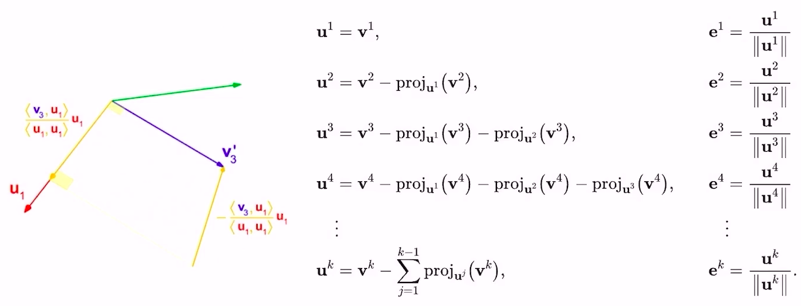
- 这里的投影操作也叫做Gram-Schmidt process，分别考虑\(A\)是单位阵（右）和\(A\)不是单位阵（左）的情况：
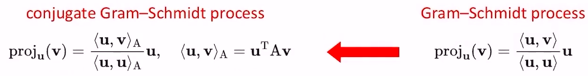
- 最终得到的\(e^{1},…,e^{n}\)就是我们需要的互相共轭的向量
- 注意到计算\(v^{n}\)的时候需要对过去的\(n-1\)个向量做投影，这个计算量很大，我们可以增量地计算\(v^{k}\)（这也是lcg方法一个很大的贡献点）：
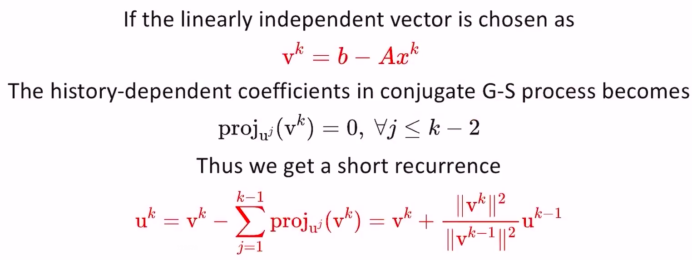
- 至于为什么用这种方法生成的\(v^{k}\)就可以保证\(proj_{u^{j}}(v^{k})=0\)可以去看论文证明
- 有了互相共轭向量后，继续看迭代流程
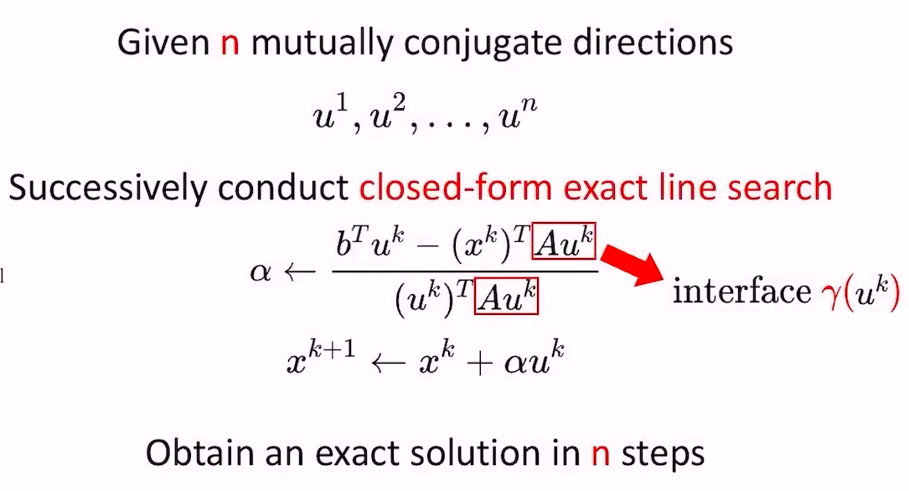
- \(\alpha\)的迭代公式是由公式\(\frac{1}{2}(x^{k}+\alpha u^{k})A(x^{k}+\alpha u^{k})-b^{T}(x^{k}+\alpha u^{k})\)的导数取0推导而来的
- 公式中的\(Au^{k}\)不需要把\(A\)（也是该优化目标函数的Hessian）完整的算出来，直接用Hessian-vec方法进行近似求解，计算复杂度和求导一样
- 最终的伪代码流程如下：
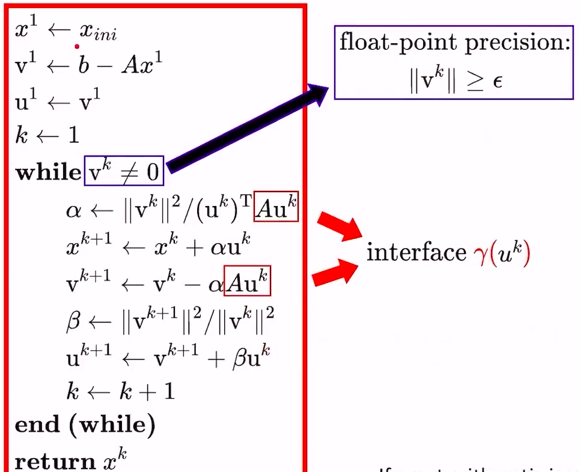
- 求\(n\)个互相共轭的向量
- LCG特点
- 很多时候需要在求LCG之前把\(A\) normalize一下，可以通过L-BFGS(memory size=8)去近似估计\(B\)（即Hessian的逆），令\(\tilde{A}=B^{\frac{1}{2}}AB^{\frac{1}{2}}\)，对\(\tilde{A}x=b\)进行lcg求解，最后将\(x\)做线性变换恢复到真实值。\(\tilde{A}\)的条件数会比\(A\)更低，CG过程会收敛的更快。下图是一个例子，A的维度是\(555\times 555\)，条件数是\(10^{10}\)，Preconditioned CG收敛速度比其他方法快很多
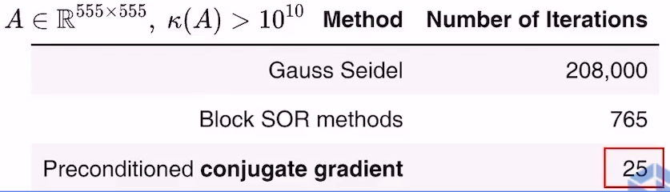
- 很多时候需要在求LCG之前把\(A\) normalize一下，可以通过L-BFGS(memory size=8)去近似估计\(B\)（即Hessian的逆），令\(\tilde{A}=B^{\frac{1}{2}}AB^{\frac{1}{2}}\)，对\(\tilde{A}x=b\)进行lcg求解，最后将\(x\)做线性变换恢复到真实值。\(\tilde{A}\)的条件数会比\(A\)更低，CG过程会收敛的更快。下图是一个例子，A的维度是\(555\times 555\)，条件数是\(10^{10}\)，Preconditioned CG收敛速度比其他方法快很多
- Newton-CG Method
- 回顾一下newton要解的问题\((\triangledown^{2}f)d=-\triangledown f\)，套用上面的LCG方法就可以解出\(d\)。但还有两个问题需要考虑：
- 如何处理Hessian不正定的问题？
- Truncated CG（截断法），见下面的算法流程
- 我们是否需要求一个精确的\(d\)？
- 答案是否。针对问题\(Hd=-g\)，我们只需要保证\(\displaystyle\lim_{g\to0}\frac{\left|d^{*}-\tilde{d}\right|}{\left|g\right|}=0\)即可（\(d^{*}\)是最优解，\(\tilde{d}\)是迭代得到的解），简单说就是一开始梯度还比较大的时候，我们求的\(d\)精度也不需要很高，越靠近最优点的时候，精度要求越高。这是牛顿法非常重要的一个结论。
- 如何处理Hessian不正定的问题？
- 算法流程（伪代码）
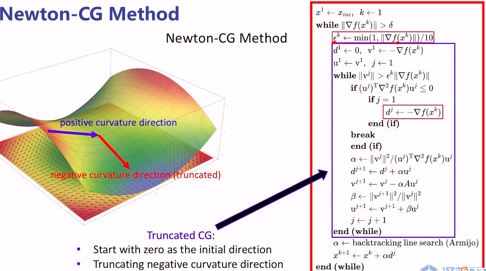
- 本质上就是将牛顿法中求解下降方向的步骤替换成蓝色框中的模块
- 注意点
- \(d\)需要初始化为0向量，因为我们希望最优的direction尽可能稳定，所以需要它从0开始出发
- 当\((u^{j})^{T}\triangledown^{2}f(x^{k})u^{j}\leq0\)时，说明我们当前所处的位置的Hessian是不定的，分两种情况对待：
- 如果当前是第一次迭代，那可能是我们距离最优解太远了，这时候直接采用sgd方法更新direction（\(d^{j}\)）
- 如果当前不是第一次迭代，就直接break，依然使用上一次算出来的direction去更新外部的循环（因为本次的direction可能会让函数上升，上一次的虽然是旧的信息，但至少方向没错），这就是截断法
- 算法对比
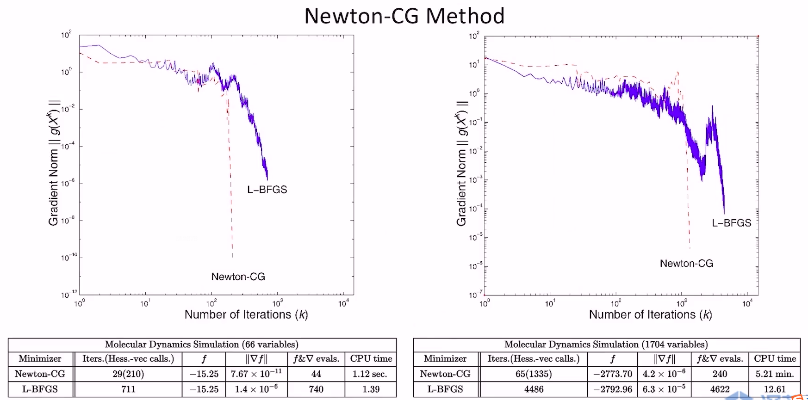
- 两种都是Hessian-Free的方法
- 两种方法只能保证函数值是单调下降的，不能保证梯度的模是单调下降的
- 通常情况下，Newton-CG比L-BFGS的最终得到的梯度模长更小
- 回顾一下newton要解的问题\((\triangledown^{2}f)d=-\triangledown f\)，套用上面的LCG方法就可以解出\(d\)。但还有两个问题需要考虑：